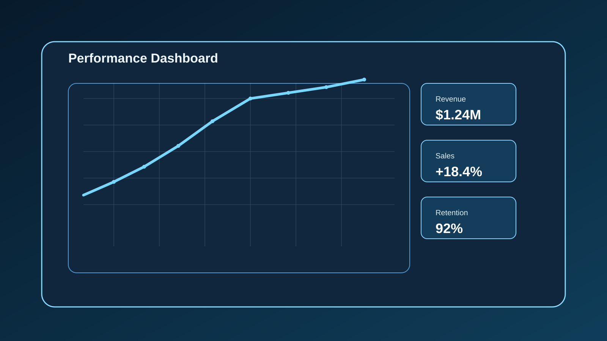
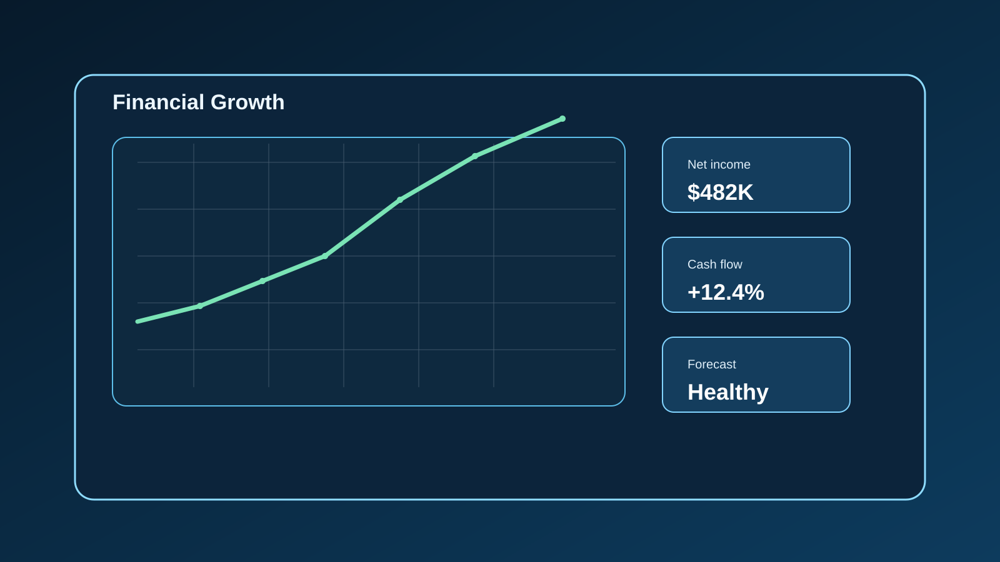

Análisis de Ventas
Análisis de información histórica para identificar tendencias, comparaciones y oportunidades de mejora comercial.
Proyectos académicos diseñados para aplicar diferentes conceptos de Data Analytics.

Análisis de información histórica para identificar tendencias, comparaciones y oportunidades de mejora comercial.

Interpretación y organización de información monetaria para comunicar patrones de movimiento y contexto financiero.

Organización de información para facilitar la lectura, priorizar indicadores clave y comunicar resultados con claridad.